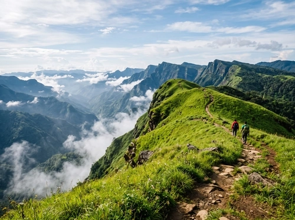
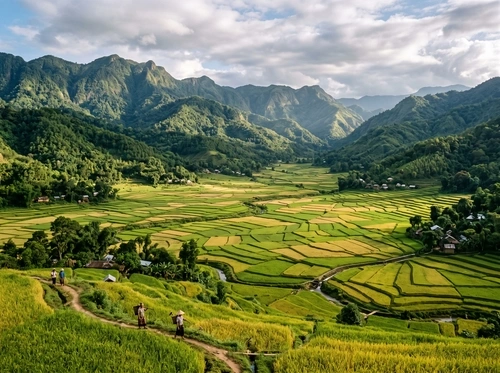
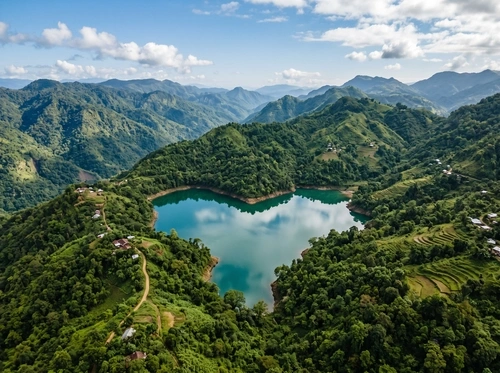
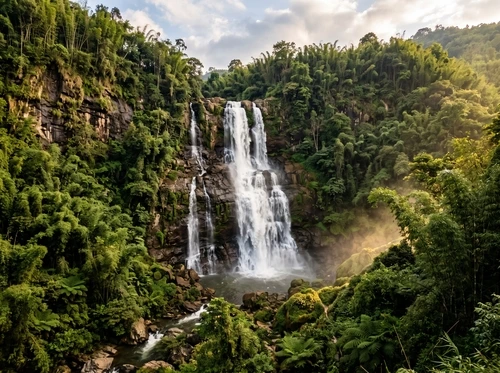

Eight days is the right number for Mizoram. Long enough to reach Thenzawl in the south, slow enough to spend a real evening in Champhai, and tight enough that you won't spend half the trip in a car. This itinerary is the one we run as our Highlands Discovery package — refined over dozens of trips and adjusted here for first-time visitors who want the full picture.
Overview & quick facts
Before the day-by-day, here's the frame. This route covers the central and southern districts of Mizoram — the most scenically diverse corridor in the state. You'll spend time in Aizawl (the capital), cross into the eastern highlands via Champhai, dip south to Thenzawl, and loop back through Hmuifang.
| Detail | Info |
|---|---|
| Duration | 8 Days / 7 Nights |
| Start / End | Aizawl (Lengpui Airport or Sairang Station) |
| Districts covered | Aizawl, Mamit, Saitual, Champhai, Serchhip |
| Total driving distance | ≈ 800-900 km (round trip) |
| Best months | October – April |
| Minimum fitness | Moderate — must be able to hike 1–2 hrs/day on Day 4 |
| Permit required | ILP (Indian nationals) · PAP (foreign nationals) |
| Package price (from) | ₹22,999 per person (group of 4) |
| Accommodation | 3-star hotels + premium cottages |
| Languages | Mizo, Hindi, English (our guides speak all three) |
ILP note: Your Inner Line Permit must be arranged at least 10 days before travel. Mizo Travel handles all paperwork — just send us your government ID details when you confirm the booking.
The 8-day itinerary at a glance

An aerial introduction to Mizoram — the ridgelines, the valleys, and the villages that make this route worthwhile.
Arrive in Aizawl — land, breathe, orient
Your first evening in the capital is deliberately slow. Aizawl deserves more than a rushed arrival and an early bed — there's a particular quality to the light here at dusk that no photo has ever quite captured.
Lengpui Airport → Aizawl (35 km, ~1 hr)
We pick you up from Lengpui Airport (or Sairang railway station if you're arriving by train). The 35-km drive to Aizawl winds through spectacular ridgeline roads — the views start immediately and don't apologise for being dramatic.
After check-in, the afternoon is yours. Walk down to Bara Bazar — the market that spills down the hillside — and have your first cup of tea with your guide while the city lays itself out below you. Dinner is at a local restaurant near the hotel; we'll order for you if you want an introduction to Mizo food before the trip properly begins.
Early night. Day 2 starts at 8am and covers a lot of ground on foot.
Aizawl — temples, markets, and the view from Solomon's
A full day walking the capital — not as a tourist ticking sights, but as someone trying to understand a city that was built straight up a cliff face because there was nowhere else to put it.
Aizawl city circuit · ~12 km on foot
Morning starts at Solomon's Temple — not for religion but for the view, which is one of the most disorienting and beautiful in Northeast India. The entire city fans out below you across three ridge spurs, houses stacked implausibly on 45° slopes, connected by staircases instead of roads.
From there we walk to the Mizoram State Museum, which houses the best collection of traditional Mizo tools, textiles, and historical documentation in the state. Spend an hour here and you'll understand the rest of the trip differently. Lunch at a local kitchen near Bara Bazar — try the bai (slow-cooked greens with pork fat) if it's on the menu.
Afternoon: the KV Paradise viewpoint as the light softens, then a slow walk through the residential lanes of Bawngkawn — the neighbourhood our office sits in — where you see how Aizawl's residents actually live rather than how the guidebooks describe them living.
Market timing: Bara Bazar is busiest between 8–11am and 4–6pm. If you want to photograph it properly, mornings are better. Sundays are quiet — most of Aizawl attends church.
Reiek Tlang — the half-day trek most visitors skip
Reiek is 30 km from Aizawl and 20 minutes from the road. The trek itself takes three hours. The traditional village at the top is one of the few in Mizoram that's been properly reconstructed with real craftspeople involved.
Aizawl → Reiek Tlang → Aizawl (60 km)
Early departure — we're at the trailhead by 8am. The path through the Reiek Ecological Park climbs steadily through pine and bamboo before opening onto the exposed ridge. On clear days you can see the Sairang valley below and, if you're lucky, glimpse the edge of the Champhai plateau to the east.
The Heritage Village at the summit is a reconstructed traditional Mizo settlement — longhouses, community pavilions, and the distinct architecture of a pre-Christian hill village. Our guide explains the social structure that shaped the buildings — the zawlbuk (bachelor's dormitory), the chief's house, the communal granary.
Back in Aizawl by 2pm. Afternoon is free — rest, explore, or visit the Lalsavunga Park in Hilmen for the sunset view that closes out your Aizawl chapter before heading east tomorrow.
Walking the Reiek ridge — what the trail looks like in the dry season, and what the Heritage Village looks like from the top.
Drive to Champhai — the road is half the point
The 193-km drive from Aizawl to Champhai takes 5–6 hours and passes through some of the most extraordinary terraced landscape in Northeast India. Stop often.
Aizawl → Champhai (193 km, 5–6 hrs)
Leave Aizawl at 7am. The NH306 climbs through terraced hill country before descending into the valley systems of Champhai district. The drive includes some of the most dramatic road sections in Mizoram — long switchback descents into river gorges, then steep climbs back to ridge elevation.
Stop for lunch at Thingsai — a small village halfway where we know a family who cooks for passing travellers. It's not on any list and we intend to keep it that way. Arrive Champhai by late afternoon. The town sits on an elevated plateau looking east toward Myanmar, and the evening light on the ridge opposite is worth arriving early for.
Road conditions: The NH306 is generally well-maintained, but sections can wash out after heavy rain. During peak monsoon (July–August), this drive can take 8+ hours. We check road conditions 48 hours before departure and adjust the itinerary where necessary.
Rih Dil Lake & the Champhai Valley floor
The heart-shaped lake near the Indo-Myanmar border is one of Mizoram's most storied places. In Mizo folklore, it's where souls pass on their way to the afterlife. In practice, it's a morning that's hard to describe afterwards.
Champhai → Rih Dil → Champhai (45 km)
Morning drive to Rih Dil. The lake sits just inside the Myanmar border — visiting requires staying on the Indian side, which gives you a particular vantage: you look across the water into another country while standing in a forest that has no awareness of the line drawn through it.
The folklore around Rih Dil is extensive and worth hearing in full from your guide, not summarised here. Set aside an hour at the lake — don't rush it.
Return to Champhai for lunch, then a slow afternoon driving the valley floor. The paddy terraces in harvest season (October–November) are unforgettable — concentric rings of gold and green stepping up the hillsides in every direction. Afternoon departure south toward Lunglei district for Days 6 and 7.
Vantawng Falls & the weavers of Thenzawl
Mizoram's tallest waterfall drops 229m in three tiers through a forest gorge. The town of Thenzawl, 12km away, is the handloom capital of the state — two things worth spending a day on.
Thenzawl → Vantawng Falls → Lunglei (130 km)
Morning in Thenzawl — we visit one of the weaving families our guide has known for years. Puan production here isn't a tourist performance; these are working looms running daily orders. The family will explain the pattern language — which stripes indicate which clan, which colour combinations are reserved for ceremonials — while the loom continues running. You can buy directly from them at fair prices.
Then to Vantawng Falls. The viewpoint gives you the full three-tier drop — 229m of white water through a forest gorge that muffles the sound until you're close enough for it to fill the air completely. The monsoon months produce the most dramatic volume; November to March give the clearest views from the path below the first tier.
Afternoon drive continues south to Lunglei — the main town of southern Mizoram and your base for Day 7.
Textile note: Puan prices in Thenzawl are considerably lower than in Aizawl shops. If you're planning to buy — and many guests do — Day 6 is your best opportunity. We can arrange to transport purchases safely for the rest of the trip.

Phawngpui Blue Mountain — summit day
Mizoram's highest point. At 2,157m the summit looks into Myanmar, Bangladesh, and on exceptionally clear days, the Chittagong Hill Tracts. You've been building to this since Day 1.
Lunglei → Phawngpui → Lunglei (180 km + 14 km trek)
4:30am wake-up. Early start to reach the Phawngpui trailhead by 7am — the drive from Lunglei takes 2.5 hours on mountain roads. Breakfast is packed the night before.
The trail from the base camp climbs through mixed forest and then pitcher-plant meadows that bloom in late March and April. The final push to the summit ridge is steep but short — the meadow at the top opens without warning, and most people stop talking when they get there. The 360° view takes several minutes to process.
Your guide will point out the landmarks in each direction: the Myanmarese Chin Hills to the east, the Bangladeshi flatlands to the west, the Bohmong Hill Tracts to the south. On the clearest days — usually October–November — you can see the Bay of Bengal as a line on the horizon.
Back at the trailhead by 2pm. Return to Lunglei, dinner, early bed. Tomorrow is the long drive home.
Phawngpui in monsoon: The trail becomes dangerously slippery and leeches are a serious issue from June through September. We do not run Phawngpui treks in these months. If your dates fall in the monsoon window, we'll substitute Hmuifang or Murlen for Day 7.
The full Phawngpui trek — trailhead to summit and back. Shot in November during the dry season with full visibility to the summit.
Return to Aizawl & departure
The 340-km return drive from Lunglei to Aizawl takes 8–9 hours. We stop at Hmuifang on the way back — a cloud-sea sunrise viewpoint that closes the trip the same way it opened: standing above the hills, looking at something that doesn't quite seem real.
Lunglei → Hmuifang → Aizawl (340 km, 8–9 hrs)
Early start from Lunglei. The highway north passes through Serchhip district and the Hmuifang hill resort area. If you're up for it — and most people are, no matter how tired Day 7 left them — we stop at the Hmuifang sunrise viewpoint for first light above the clouds. It's exactly what it sounds like.
Back in Aizawl by 4pm. Time for a final meal, last-minute shopping at Bara Bazar if needed, and the trip south to Lengpui for your flight. Most guests spend the last hour in the car saying very little. That's generally a sign the trip went well.
Costs & what's included
The Highlands Discovery package — the eight-day version of this itinerary — starts at ₹22,999 per person for a group of four. Here's what the price covers and what it doesn't.
| Item | Included |
|---|---|
| Accommodation (7 nights) | ✓ 3-star hotels + village homestays |
| Private car + driver (all 8 days) | ✓ Included |
| Local guide (certified, from the district) | ✓ Included |
| Daily breakfast | ✓ Included |
| ILP / PAP permit assistance | ✓ Included |
| All entry fees to parks and reserves | ✓ Included |
| Emergency contact & support (24/7) | ✓ Included |
| Flights to/from Aizawl | ✗ Not included |
| Lunches and dinners (except as noted) | ✗ Not included (budget ₹300–500/meal) |
| Personal travel insurance | ✗ Not included (strongly recommended) |
| Personal purchases (Puan, souvenirs) | ✗ Not included |
Upgrades available: Add all meals, airport transfers, camping nights instead of hotel on Day 7, or upgrade to premium homestays with private bathrooms throughout. Contact us for a custom quote — most customisation requests come back within 24 hours.
Planning tips from our guides
What to pack
- Layers: Mornings are cold at altitude year-round. A fleece + windproof shell covers most conditions outside the monsoon.
- Trekking shoes: Mandatory for Day 7, useful for Days 3 and 5. Trail runners work; waterproof soles are better.
- Daypack (20–25L): For Day 7 only — all other days your main bags stay in the car.
- Power bank: Charging points in remote areas and homestays can be unreliable.
- Cash (INR): ATMs thin out past Champhai. Carry enough for 3–4 days at minimum.
- Reusable water bottle: We refill at safe sources en route — single-use plastic is discouraged on all our routes.
Connectivity
Airtel has the best rural coverage in Mizoram. BSNL works in most towns. Expect dead zones between Champhai and Lunglei. Download offline maps (Google Maps works) for the full route before you leave Aizawl. Your guide will always have a local SIM with a working signal.
Health and altitude
Phawngpui at 2,157m is not technically high altitude — altitude sickness is rare. However, Day 7 is a long, physical day after seven days of travel. Hydrate well the day before, eat a proper dinner, and sleep early. The trek is perfectly manageable for fit travellers; people underestimate the cumulative tiredness of a multi-day trip and overestimate their Day 7 energy.
Photography
Golden hour on Day 2 from Solomon's Temple is the single best photography window of the trip. Day 7 summit is second — aim to arrive by 10am before any haze builds. Rih Dil rewards early morning. Thenzawl weavers — ask before photographing; most families are happy to be asked.
Frequently asked questions
The Highlands Discovery package starts at ₹22,999 per person for a group of 4. This includes 3-star hotels or homestays, private car, daily breakfast, all entry fees, local guide, and ILP assistance. Solo or smaller groups are priced higher per head — contact us for an exact quote for your group size.
October to April is ideal. November–March gives the clearest skies for Phawngpui. March adds Chapchar Kut festival if you time it right (usually the first week of March). Avoid June–August for Phawngpui specifically — the trail is slippery and dangerous after heavy monsoon rain.
Moderate-to-strenuous, not technical. The trail is a clear path through forest and meadow — no rock climbing or scrambling. The challenge is the length (14km round trip) and elevation gain (~600m from base camp). If you can walk 6–8 hours at a steady pace, you can do it. Our guide adjusts pace to the group.
Completely. This itinerary is a starting point — we've run it with extra days in Champhai, with festival detours, with Tamdil Lake added on Day 3, with the Phawngpui overnight camping variant instead of the day return. Send us your dates and we'll build something specific to you within 24 hours.
Yes — flights are not included in the package. Lengpui Airport (Aizawl) has regular flights from Kolkata, Guwahati, and Imphal. We recommend arriving by 12pm on Day 1 to make the most of the evening. We can also arrange overland pickup from Silchar or Guwahati if you prefer the scenic route in.
Ready to run this route with a local guide?
Send us your dates on WhatsApp and we'll send back a custom itinerary within 24 hours — with real prices, real accommodation, and a guide who grew up near every place on this list.